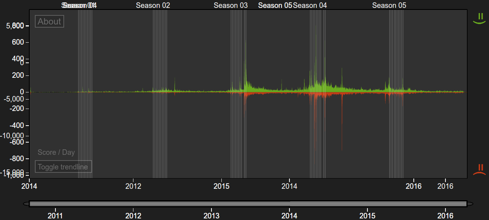
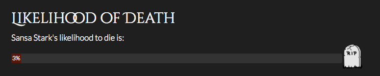
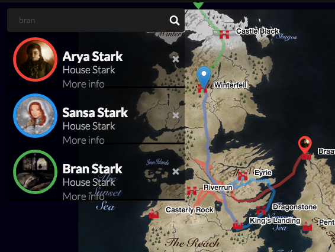

Bran Stark

Bran Stark, Game of Thrones.
It’s been awfully quiet around Bran this year, since HBO decided to keep him from us during Season 5. While we can only hope someone got fired for that, we sure as hell are excited for his appearance in April! Remember season 4’s epic finale, where the young Stark boy was promised the ability to fly after meeting the three-eyed raven? Seems like his buddy Hodor didn’t carry him around all this time for nothing, after all. Or, how he likes to put it: Hodor hodor, hodor. Hodor.
Hodor

Hodor, Game of Thrones.
Did you know that Hodor is actually the second most popular Game of Thrones character on Twitter? See it yourself!
What people think about Hodor on Twitter. Game of Thrones Sentiment Analysis.
Sansa Stark

Sansa Stark. Game of Thrones.
Oh boy. Where do I start? Sansa’s been having a troubled family life ever since her dad passed away. After two unhappy marriages, she fled from her husband yet again – with Theon Greyjoy by her side. Quite an unusual combination, after all they’ve been through, but I guess nothing unites people quite as well as a mutual disgust for Ramsay Bolton. … That is, of course, if they are still alive. Which is hard to say at this point – unless you calculate their likelihood of death with a machine learning algorithm, like the fancy one we’ve implemented right here on this page! Always looking out for fellow Game of Thrones fans here. Currently, we estimate Sansa’s chances to die to be at: 3%

Sansa Stark’s survival chances in Game of Thrones Season 6.
Arya Stark

Arya Stark. Game of Thrones.
We’re not the only ones who’ve been kept dark when it comes to the Game of Thrones universe for the past few months. For Arya Stark, Season 6 is going to look a lot like 50 Shades of Grey, since she got punished with blindness by the Many-Faced-God for taking a life that wasn’t hers to take. I guess those things happen when you surround yourself with that kind of people. No reason to give us that look Arya, it’s certainly not our fault!

Wait a minute…
… didn’t we forget somebody here? Yes, we did! Jon Snow, the other children’s half-brother! Oh, but he’s dead
anyway Wrong! He’s as fresh as a daisy. How we know? Machine learning. See it
yourself!
Follow the Stark’s around their journey through Westereos

Where are Arya, Bran & Sansa Stark?